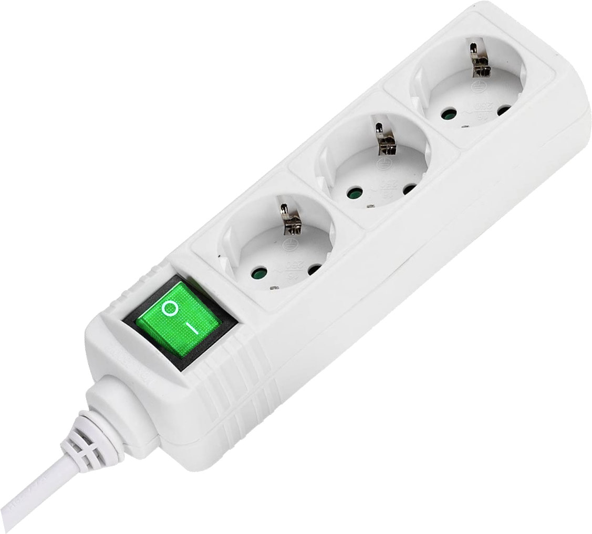

Asistente informático de IBS
Micrófono
Estos pasos le ayudarán a realizar unas simples pruebas para intentar solventar los problemas:

1.- En el cajón del ordenador, hay un regleta, apaguela y vuelva a encenderla.
Siguiente paso